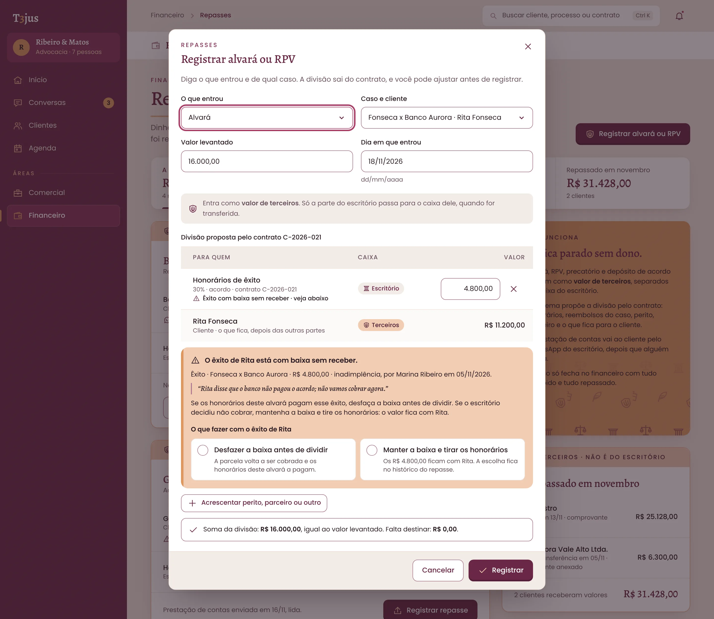

eb-proposta
A divisão com o êxito baixado: o aviso e a escolha, sem nada marcado
Diego. A janela de hoje, com a divisão proposta. Na célula dos honorários, só a linha curta “Êxito com baixa sem receber · veja abaixo”. Abaixo da tabela, dentro do quadro “Divisão”, o aviso: quem deu a baixa, quando, por quê (a explicação entre aspas), e o que fazer. O grupo “O que fazer com o êxito de Rita” vem sem nada marcado. Rita: R$ 11.200,00.